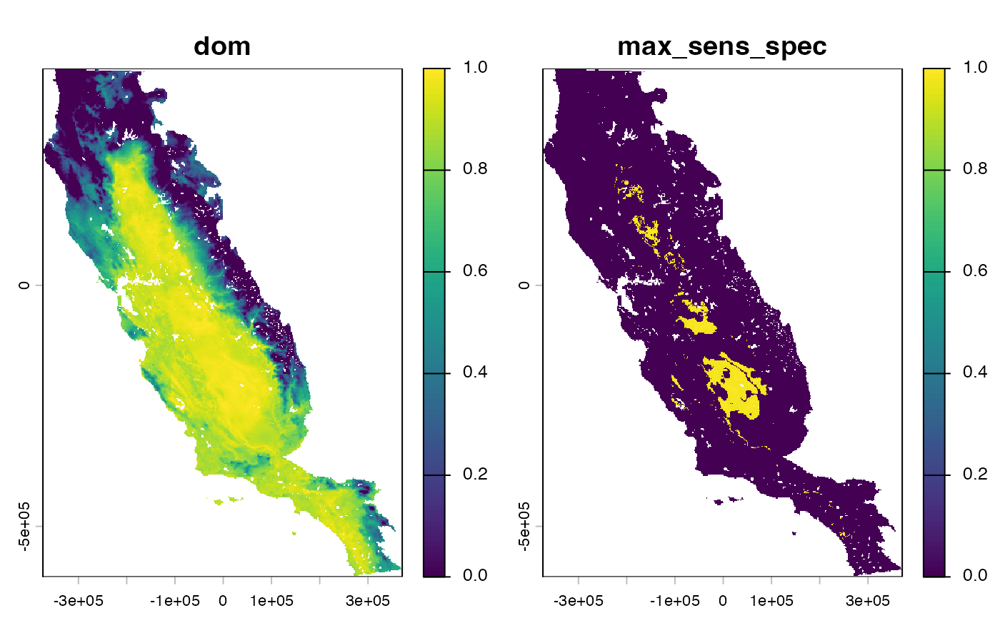
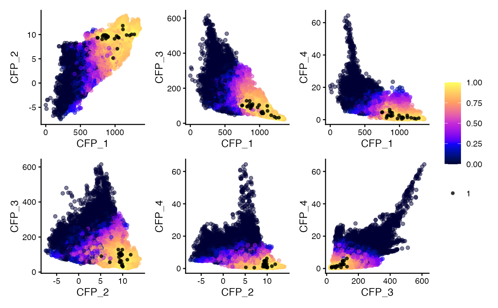
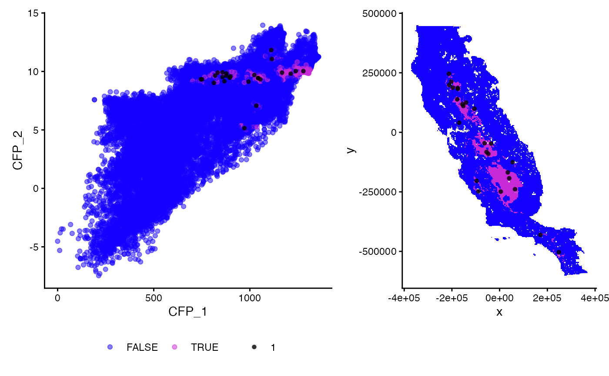

Fit and validate Domain models
Arguments
- data
data.frame. Database with response (0,1) and predictors values.
- response
character. Column name with species absence-presence data (0,1).
- predictors
character. Vector with the column names of quantitative predictor variables (i.e. continuous variables). Usage predictors = c("aet", "cwd", "tmin")
- predictors_f
character. Vector with the column names of qualitative predictor variables (i.e. ordinal or nominal variables; factors). Usage predictors_f = c("landform")
- partition
character. Column name with training and validation partition groups. If partition = NULL, the model will be validated with the same data used for fitting.
- thr
character. Threshold used to get binary suitability values (i.e. 0,1). This is useful for threshold-dependent performance metrics. It is possible to use more than one threshold type. It is necessary to provide a vector for this argument. The following threshold criteria are available:
lpt: The highest threshold at which there is no omission.
equal_sens_spec: Threshold at which the sensitivity and specificity are equal.
max_sens_spec: Threshold at which the sum of the sensitivity and specificity is the highest (aka threshold that maximizes the TSS).
max_jaccard: The threshold at which the Jaccard index is the highest.
max_sorensen: The threshold at which the Sorensen index is highest.
max_fpb: The threshold at which FPB (F-measure on presence-background data) is highest.
sensitivity: Threshold based on a specified sensitivity value. Usage thr = c('sensitivity', sens='0.6') or thr = c('sensitivity'). 'sens' refers to sensitivity value. If a sensitivity value is not specified, the default used is 0.9.
If more than one threshold type is used they must be concatenated, e.g., thr=c('lpt', 'max_sens_spec', 'max_jaccard'), or thr=c('lpt', 'max_sens_spec', 'sensitivity', sens='0.8'), or thr=c('lpt', 'max_sens_spec', 'sensitivity'). Function will use all threshold types if none is specified.
Value
A list object with:
model: A tibble with presences. This object can be used for predicting.
predictors: A tibble with quantitative (c column names) and qualitative (f column names) variables use for modeling.
performance: Performance metric (see
sdm_eval). Threshold dependent metrics are calculated based on the threshold specified in the argument.performance_part: Performance metric for each replica and partition (see
sdm_eval).data_ens: Predicted suitability for each test partition. This database is used in
fit_ensemble
Details
This function fits and validates Domain models. The Domain model is a simple model that uses the Gower distance to
calculate environmental similarity between the presence data and test data (Carpenter et al., 1993).
Gower range of values area based on presences data. Gower distance are transformed to max(0, 1 - Gower).
This involves subtracting the distance from 1 and then ensuring the result is not negative (clamping it at zero).
Gower distance is calculated with map_env_dist function
This function fit and validate Domain models. The Domain model is a simple model that uses the Gower distance to calculate the similarity between the presences training and presence-absences test data.
References
Carpenter, G., Gillison, A.N., Winter, J., 1993. DOMAIN: a flexible modelling procedure for mapping potential distributions of plants and animals. Biodiversity & Conservation 2, 667–680
Examples
# \donttest{
require(dplyr)
require(terra)
data("spp")
somevar <- system.file("external/somevar.tif", package = "flexsdm")
somevar <- terra::rast(somevar)
# Extract data
some_sp <- spp %>%
filter(species == "sp2")
some_sp <-
sdm_extract(
data = some_sp,
x = "x",
y = "y",
env_layer = somevar
)
#> 6 rows were excluded from database because NAs were found
# Partition
some_sp <- part_random(
data = some_sp,
pr_ab = "pr_ab",
method = c(method = "rep_kfold", folds = 3, replicates = 5)
)
## %######################################################%##
# #
#### Fit a Domain model ####
# #
## %######################################################%##
# Fit some models
mdom <- fit_dom(
data = some_sp,
response = "pr_ab",
predictors = c("CFP_1", "CFP_2", "CFP_3", "CFP_4"),
predictors_f = NULL,
partition = ".part",
thr = c("max_sens_spec")
)
#> Formula used for model fitting:
#> pr_ab ~ CFP_1 + CFP_2 + CFP_3 + CFP_4
#> Replica number: 1/5
#> Partition number: 1/3
#> Partition number: 2/3
#> Partition number: 3/3
#> Replica number: 2/5
#> Partition number: 1/3
#> Partition number: 2/3
#> Partition number: 3/3
#> Replica number: 3/5
#> Partition number: 1/3
#> Partition number: 2/3
#> Partition number: 3/3
#> Replica number: 4/5
#> Partition number: 1/3
#> Partition number: 2/3
#> Partition number: 3/3
#> Replica number: 5/5
#> Partition number: 1/3
#> Partition number: 2/3
#> Partition number: 3/3
mdom
#> $model
#> $model$domain
#> CFP_1 CFP_2 CFP_3 CFP_4
#> 2 812.9330 9.018502 128.17863 1.1593102
#> 6 745.2519 9.333002 100.67301 4.5176325
#> 18 877.6121 9.639521 93.81507 2.2244918
#> 20 1167.3136 9.896931 45.48384 1.1969734
#> 22 971.5621 5.149318 90.83746 0.6982510
#> 24 1023.3878 9.692108 62.63717 1.5342857
#> 27 867.4425 9.158304 85.79652 2.5819225
#> 28 895.3558 9.455721 101.43431 4.2094736
#> 30 993.0160 9.127216 104.16163 2.6635654
#> 37 1043.0856 9.437616 66.71684 1.5069715
#> 44 1033.5835 7.068839 56.15467 0.4848571
#> 51 1111.4476 11.828300 98.92643 2.5997550
#> 53 858.0374 9.520479 110.19350 4.9036937
#> 58 819.3171 9.645110 95.04754 2.2312715
#> 63 832.5042 9.894765 98.65343 2.7246571
#> 65 1042.8835 9.423063 56.54671 1.1241204
#> 74 1054.3391 9.325984 56.79437 1.1663285
#> 77 877.5456 9.819598 101.98602 4.5454674
#> 78 1238.8981 10.029047 31.16336 0.5582449
#> 81 1212.7097 9.808502 37.32944 0.7953286
#> 83 1278.4004 10.030069 32.29358 0.9610143
#> 86 1114.4452 11.065110 70.57339 1.4220755
#> 89 857.5580 9.927006 127.88165 6.2335329
#> 90 899.3600 9.582108 109.59014 2.5626795
#> 91 751.3935 9.330402 102.32713 4.7009835
#>
#>
#> $predictors
#> # A tibble: 1 × 4
#> c1 c2 c3 c4
#> <chr> <chr> <chr> <chr>
#> 1 CFP_1 CFP_2 CFP_3 CFP_4
#>
#> $performance
#> # A tibble: 1 × 33
#> model threshold thr_value n_presences n_absences TPR_mean TPR_sd TNR_mean
#> <chr> <chr> <dbl> <int> <int> <dbl> <dbl> <dbl>
#> 1 dom max_sens_spec 0.973 25 69 0.926 0.103 0.843
#> # ℹ 25 more variables: TNR_sd <dbl>, W_TPR_TNR_mean <dbl>, W_TPR_TNR_sd <dbl>,
#> # SORENSEN_mean <dbl>, SORENSEN_sd <dbl>, JACCARD_mean <dbl>,
#> # JACCARD_sd <dbl>, FPB_mean <dbl>, FPB_sd <dbl>, OR_mean <dbl>, OR_sd <dbl>,
#> # TSS_mean <dbl>, TSS_sd <dbl>, KAPPA_mean <dbl>, KAPPA_sd <dbl>,
#> # MCC_mean <dbl>, MCC_sd <dbl>, AUC_mean <dbl>, AUC_sd <dbl>,
#> # BOYCE_mean <dbl>, BOYCE_sd <dbl>, CRPS_mean <dbl>, CRPS_sd <dbl>,
#> # IMAE_mean <dbl>, IMAE_sd <dbl>
#>
#> $performance_part
#> # A tibble: 15 × 21
#> replica partition model threshold thr_value n_presences n_absences TPR
#> <chr> <chr> <chr> <chr> <dbl> <int> <int> <dbl>
#> 1 1 1 dom max_sens_spec 0.767 9 23 1
#> 2 1 2 dom max_sens_spec 0.837 8 23 1
#> 3 1 3 dom max_sens_spec 0.935 8 23 0.875
#> 4 2 1 dom max_sens_spec 0.920 9 23 0.889
#> 5 2 2 dom max_sens_spec 0.751 8 23 1
#> 6 2 3 dom max_sens_spec 0.862 8 23 1
#> 7 3 1 dom max_sens_spec 0.861 9 23 1
#> 8 3 2 dom max_sens_spec 0.826 8 23 1
#> 9 3 3 dom max_sens_spec 0.931 8 23 0.75
#> 10 4 1 dom max_sens_spec 0.841 9 23 1
#> 11 4 2 dom max_sens_spec 0.926 8 23 0.875
#> 12 4 3 dom max_sens_spec 0.748 8 23 1
#> 13 5 1 dom max_sens_spec 0.838 9 23 1
#> 14 5 2 dom max_sens_spec 0.914 8 23 0.75
#> 15 5 3 dom max_sens_spec 0.934 8 23 0.75
#> # ℹ 13 more variables: TNR <dbl>, W_TPR_TNR <dbl>, SORENSEN <dbl>,
#> # JACCARD <dbl>, FPB <dbl>, OR <dbl>, TSS <dbl>, KAPPA <dbl>, MCC <dbl>,
#> # AUC <dbl>, BOYCE <dbl>, CRPS <dbl>, IMAE <dbl>
#>
#> $data_ens
#> # A tibble: 470 × 5
#> rnames replicates part pr_ab pred
#> <chr> <chr> <chr> <dbl> <dbl>
#> 1 6 .part1 1 1 0.898
#> 2 8 .part1 1 0 0.910
#> 3 10 .part1 1 0 0.920
#> 4 15 .part1 1 0 0.0115
#> 5 21 .part1 1 0 0.890
#> 6 22 .part1 1 1 0.767
#> 7 23 .part1 1 0 0.611
#> 8 25 .part1 1 0 0
#> 9 40 .part1 1 0 0
#> 10 42 .part1 1 0 0.769
#> # ℹ 460 more rows
#>
# Predict model
ind_p <- sdm_predict(
models = mdom,
pred = somevar,
thr = "max_sens_spec",
con_thr = TRUE,
predict_area = NULL
)
#> Predicting individual models
plot(ind_p$dom)

## %######################################################%##
# #
#### Explore Domain suitabiltiy ####
#### in the environmental space ####
# #
## %######################################################%##
p_extra(
training_data = some_sp %>% dplyr::filter(pr_ab == 1), # select only presences
x = "x",
y = "y",
pr_ab = "pr_ab",
extra_suit_data = ind_p$dom$dom,
projection_data = somevar,
geo_space = FALSE,
prop_points = 0.3,
alpha_p = 0.8,
color_p = "black",
color_gradient = c("#000033", "#1400FF", "#C729D6", "#FF9C63", "#FFFF60")
)
#> Number of cell used to plot 21842 (30%)

p_extra(
training_data = some_sp %>% dplyr::filter(pr_ab == 1), # select only presences
x = "x",
y = "y",
pr_ab = "pr_ab",
predictors = c("CFP_1", "CFP_2"), # Just the first two predictors
extra_suit_data = ind_p$dom$dom > 0.96, # a binary map
projection_data = somevar,
geo_space = TRUE,
prop_points = 0.4,
alpha_p = 0.8,
color_p = "black",
color_gradient = c("#1400FF", "#C729D6")
)
#> Number of cell used to plot 29122 (40%)

# }